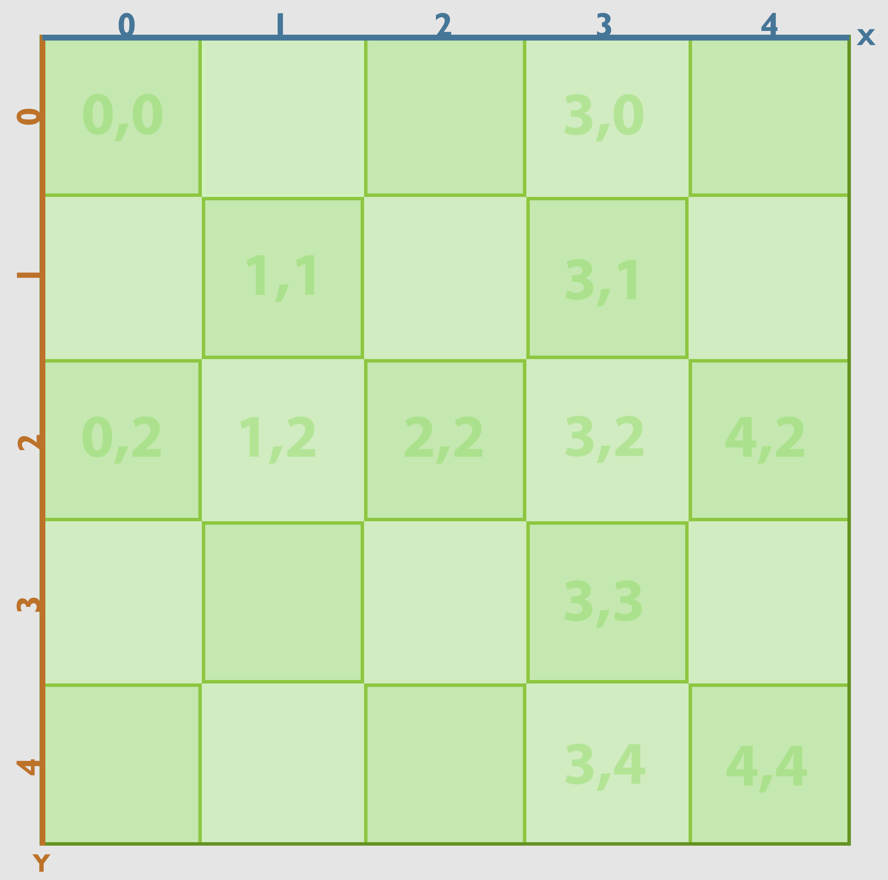
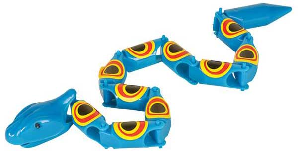
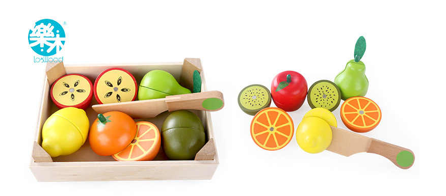
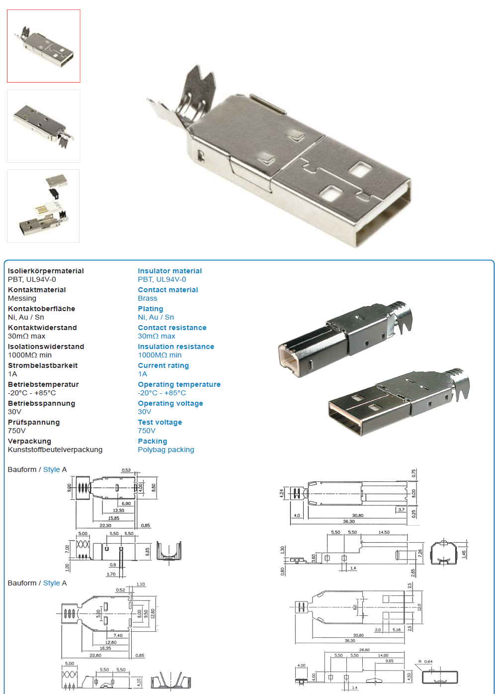
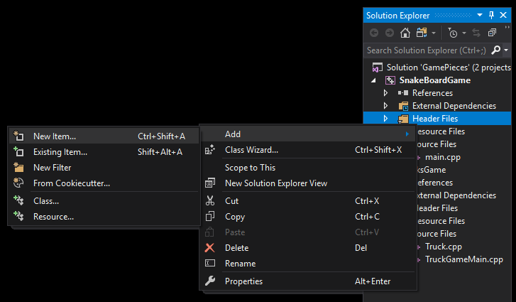
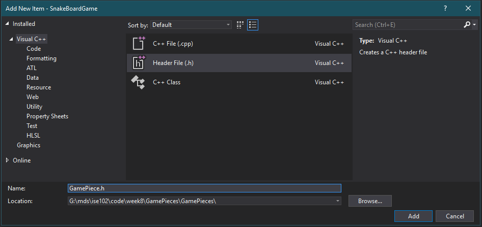
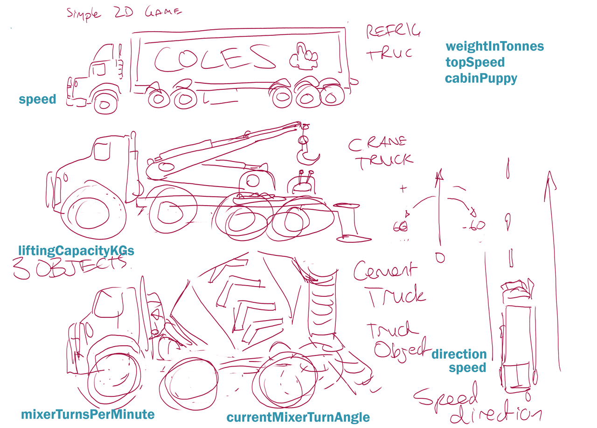

ise102 week 8: Objects and Classes
Intro to Object Oriented Programming.
Snake as a board game
Board games. They have two basic parts minimum, usually.
- Board
- Pieces
We’ve all played Snake. What happens in the game?

So maybe we have a simple board, divided into a grid of squares, in a grassy colour. We can use horizontal (x) and vertical (y) coordinates to identify them.

Game piece
When we play a board game we often have physical chips or figures that we move around the board to signify players, enemies, props. What pieces would you need? Where do they go?


Whatever they end up being, we could break a snake game piece down to a few basic properties.
A game piece has a kind (fruit, bit of snake) and a location
Pieces, objects
Other objects on our board:
- Fruit has maybe colour? A name?
- A snake needs to go places. What things do we need to know for an object to travel in space?

Designs for objects
Okay, if we wanted to get our snake board game made, we could go to a maker of game boards and say
"Hey, we designed a board game. Make it for us. How much will it cost to make 100 sets?
What will the ask us next? What if we wanted one hundred laptops? Dinner for 12? A fleet of trucks? 10 orc grunts?
Okay, give me the schematic/design/recipe/cad files.
The schematic/plan/design
You make things from a design. Maybe there’s a prototype object too, which the design describes. A version made from that design, and you will make more.
- 100 cakes: recipe and ingredients please
- 100 mini tower PCs: give me the parts list.
- 100 trucks: give me the schematics and cad files and parts list etc etc.

Engineers drawings and specs for usb connectors

C++ schematics: class
Our plan or design, in c++, is called a class. A class lets us tell c++ how to make variables for us of a whole new type. Just imagine being able create a game piece this easily:
int main() { GamePiece fruit; fruit.xSquare = 2; fruit.ySquare = 4; }
If we want a
GamePiecewith x,y coordinates and a name, well we just make this design or recipe inclassform.
Same with trucks: you want them made, you design one in a class. Then you can declare as many variables of type Truck as you want.
They go in a special kind of file called a “header”, ending in a .h extension.

Right click your project, Add -> New Item

Visual C++, Header file (.h), name your class with a capital
/// File: GamePiece.h /// Any piece in our snake board game has these properties. #pragma once #include <string> using namespace std; class GamePiece { public: int xSquare; int ySquare; string kind = ""; };
Take out the
#pragma once,class GamePiecedefinition and keywordpublicand this is just like the top of our main file. Include, using, and then some variables or functions defined.
A very basic truck is easy to specify. We can start with a few small attributes.
/// File: truck.h #pragma once class Truck { public: int speedInKph = 0; float weightInTonnes = 3.6; };
Then we can declare them in main just like we would a string or an int. Just include the .h file, and start declaring Truck truckname.
/// File: world_of_trucks_main.h #include "Truck.h" int main() { // Individual trucks made from the Truck design are called // `instances` of the Truck class, also `objects` Truck soBoringTruck Truck dullOscar; soBoringTruck.speedInKph = 60; }
What were those extra bits?
pragma once is added automatically by Visual Studio. It means “if this file is included in multiple files, only define it once”. It just ensures that there is only one Truck design, though many objects can be made.
public: means these variables can be seen/used by outside code, like our main function.
private: would mean any variables that followed can only be used inside the Truck class. Internal, hidden stuff to make the class work.
Extending our designs
Extending a thing to make a similar but fancier thing!
Duplication is bad
We don’t want 50 kinds of trucks all with int speedKph in the class file if we have to move to mph. A crane truck is just an extension on the truck design, so is a cement truck.
Inheriting from a class/design
How can I extend a design into something new, while getting all those definitions for free?
In Object Oriented design this is called inheritance. You can make a new class that inherits all the characteristics of the old one. Then you add more!
Trucks
Truck -> CraneTruck
Truck -> CementTruck

Some Truck, CraneTruck, CementTruck property ideas discussed in class
Trucks In Code
Look at how superBeastlyCrane and darlene the cement truck have speedMph despite never declaring it. They also have unique properties like liftingCapacityKgs and mixerCurrentAngle.
//trucks_main.cpp // This is a Tester: it makes some objects from classes/designs, // Like any scientist it observes, changes, observes again. #include <iostream> #include "Truck.h" #include "CraneTruck.h" #include "CementTruck.h" using namespace std; // Making and testing instances from classes. int main() { // Two boring trucks // One crane truck Truck soBoringTruck; Truck dullOscar; CraneTruck superBeastlyCrane; CementTruck darlene; soBoringTruck.speedMph = 25; dullOscar.speedMph = 10; superBeastlyCrane.speedMph = 10; superBeastlyCrane.liftingCapacityKgs = 5910; darlene.speedMph = 20; darlene.mixerCurrentAngle = 12.0f; // print boring truck speeds cout << "sbt speed " << soBoringTruck.speedMph << endl; cout << "superCrane's lift power: " << superBeastlyCrane.liftingCapacityKgs << endl; // print crane trucks lifting capacity. }
Here’s truck, which declares speedMph as a public: property.
//Truck.h #pragma once class Truck { public: int speedMph = 0; float steeringAngle = 0.0f; // straight string cabinPuppy = "Leroy"; };
Inheriting Truck
If the CementTruck and CraneTruck want to extend Truck, all they need to do is
#include "Truck.h"(note the use of " " instead of < >)- add
: public Truckafter the class definition 👌
//CementTruck.h #pragma once #include "Truck.h" class CementTruck : public Truck { public: float mixerCurrentAngle = 0.0f; };
//CraneTruck.h #pragma once #include "Truck.h"; class CraneTruck : public Truck { public: int liftingCapacityKgs = 1000; };
Game controller evolution
One more physical world example of extending a design.
direction + face button + connection ->
direction + multi face buttons + connection ->
analogue and digital direction + multi face buttons + wireless connection
Debugging
We’ve been using visual studio to compile our code and run the executable (.exe) file it produces in a separate console window.
When we’ve been hunting for bugs we’ve used cout to look at changing variables, or to just make sure certain lines (maybe in a for loop or if statement) are being reached.
There is a better way to catch bugs, and it’s name fits: debugging mode
We’ve been using “run without debugging; today we’ll try the alternative.
——
Debugger mode
Debugging mode is built around the debugger, a program that can look at and control your program’s memory and execution. Your console window will open as normal, but visual studio will change it’s whole layout to display loads of realtime info from the debugger:

Debuggers are available for most languages, and have a few common features.
—-
Stepping
What if you could watch as your code executes, line by line, and see the values of all the variables as they change? Would that make life easier than viewing a debug.log here and there?
Step through does exactly that.
Insert Pic of step buttons
—-
Step into, step out:
Go into the function being called on this line, or out of a function
—-
Step over:
steps to the next line in current function. Treats lines with function calls like any other line.
—-
Breakpoints
Stepping through is great but has one major down side: it might take a long time to reach a point of interest. What if, instead. You could choose to pause execution only at certain lines?

breakpoint and hilighted code
You do that by placing break points in your code, little red dots that appear when you click a space in the left margin of the code window, near the line numbers.
the break in breakpoints comes from taking a break, pausing, not from breaking/broken.
Info!
Loads of info is available in debugger mode, which includes some performance profiling too.
- Variables and their contents
- the call stack (function calls in sequence),
- execution time,
- contents of actual memory
- more.
another look at the debugger screen info
Resources
Visual studio docs debugger page: